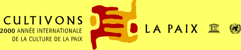

| Manifeste 2000 pour une
culture de la paix et de la non-violence |
|
|
arce que l'an 2000 doit
être un nouveau départ, l'occasion de transformer - ensemble - la culture de la
guerre et de la violence en une culture de la paix et de la non-violence. |
|
| arce que pareille
transformation exige la participation de chacune et de chacun, et doit offrir aux jeunes
et aux générations futures des valeurs qui les aident à façonner un monde plus juste,
plus solidaire, plus libre, digne et harmonieux et plus prospère pour tous. |
|
| arce que la culture de la paix
rend possible le développement durable, la protection de l'environnement et
l'épanouissement de chacun. |
|
| arce que je suis conscient de ma
part de responsabilité face à l'avenir de l'humanité, et en particulier des
enfants d'aujourd'hui et de demain. |
Je prends l'engagement dans ma vie quotidienne, ma
famille, mon travail, ma communauté, mon pays et ma région de :
 |
respecter la vie et la dignité de chaque être humain sans
discrimination ni préjugé ; |
 |
 |
pratiquer la non-violence active, en rejetant la violence sous
toutes ses formes: physique, sexuelle, psychologique, économique et sociale, en
particulier envers les plus démunis et les plus vulnérables tels les enfants et les
adolescents ; |
 |
 |
partager
mon temps et mes ressources matérielles en cultivant la générosité, afin de mettre
fin à l'exclusion, à l'injustice et à l'oppression politique et économique ; |

|
 |
défendre
la liberté d'expression et la diversité culturelle en privilégiant toujours
l'écoute et le dialogue sans céder au fanatisme, à la médisance et au rejet d'autrui ; |

|
 |
promouvoir
une consommation responsable et un mode de développement qui tiennent compte de
l'importance de toutes les formes de vie et préservent l'équilibre des ressources
naturelles de la planète ; |

|
 |
contribuer
au développement de ma communauté, avec la pleine participation des femmes et dans
le respect des principes démocratiques, afin de créer, ensemble, de nouvelles formes de
solidarité. |
 |